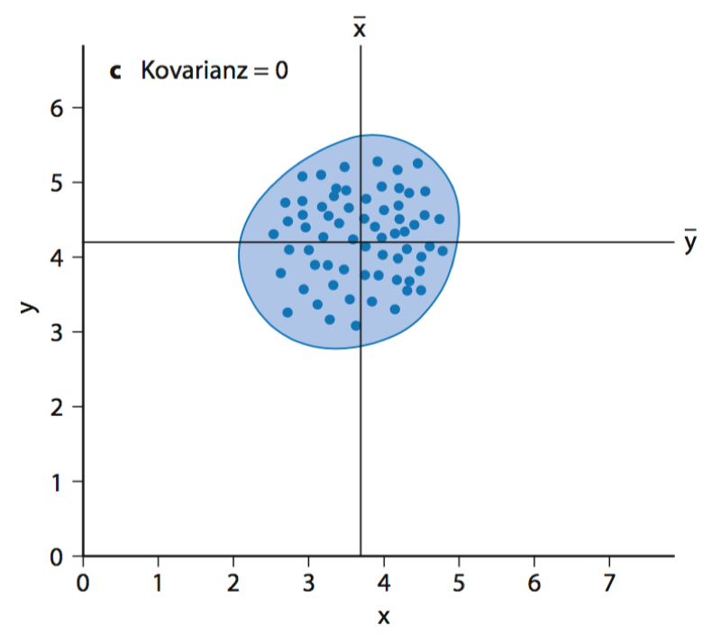

Chapter 6 Kovarianz + Datenvisualisierungen
6.1 Wiederholung
- Warum brauchen wir Streuungsmaße?
- Wie berechnet man die empirische Stichprobenvarianz?
- Wie berechnet man die Standardabweichung?
6.2 Beziehungen zwischen Beobachtungen
Beispiel Hat das Lernen Einfluß auf den Examenserfolg?
Zur Beantwortung dieser Frage gibt es drei Möglichkeiten von Beobachtungen:
- Je größer die Anzahl der Lernstunden, desto besser ist die Note.
- Es gibt keinen Zusammenhang zwischen der Anzahl der Lernstunden und der Examensnote.
Je größer die Anzahl der Lernstunden, desto niedriger ist die Note.
- positive Beziehung: \(\uparrow\) \(\uparrow\); \(\downarrow\) \(\downarrow\)
- keine Beziehung: nix
negative Beziehung: \(\uparrow\) \(\downarrow\); \(\downarrow\) \(\uparrow\)
6.3 Streudiagramm scatterplot
Die folgende Tabelle beschreibt 2 Beobachtungen: (1) die Frequenz eines Wortes in einem Text und (2) die Länge dieses Wortes.
| Frequenz | Wortlänge | |
|---|---|---|
| 1 | 14 | 4 |
| 2 | 23 | 8 |
| 3 | 25 | 7 |
| 4 | 10 | 5 |
| 5 | 18 | 6 |
| 6 | 27 | 10 |
| 7 | 5 | 3 |
| 8 | 29 | 9 |
| 9 | 30 | 8 |
| 10 | 18 | 5 |
| 11 | 17 | 5 |
| 12 | 28 | 7 |
| 13 | 8 | 4 |
| 14 | 9 | 4 |
| 15 | 10 | 7 |
Ein möglicher Zusammenhang zwischen den beiden Variablen kann man in einem Streudiagramm visuell darstellen. Ein Streudiagramm dient der graphischen Veranschaulichung eines Variablenzusammenhangs:
Scatterplot
6.4 Scatterplot mit Mittelwert
Scatterplot mit Mittelwert
Scatterplot mit gerader Linie, die den geringsten Abstand zu den einzelnen Werte beschreibt. Das wird später noch einmal wichtig, wenn wir uns mit Modellen beschäftigen.
Die verschiedenen R-Befehle zum scatterplot werden im kommenden Kapitel beschrieben.
6.5 Kovarianz
Zusammenhangmaße
Es ist häufig relevant oder interessant, ob eine paarweise Beziehung zwischen zwei Beobachtungen besteht und wie stark dieser Zusammenhang ist.
Die Varianz einer einzelnen Variable gibt an, wie weit diese vom Mittelwert abweicht. Um eine Beziehung zwischen Variablen zu etablieren (positiv, negativ oder keine), muss man herausfinden, ob eine Änderung in einer Variablen mit einer vorhersehbaren Änderung in einer anderen Variablen einhergeht. Wenn eine Beziehung vorliegt, dann sollte die Änderung einer Variable mit einer entsprechender Änderung in der anderen Variablen einhergehen: entweder in dieselbe oder in die entgegengesetzte Richtung.
Die Kovarianz ist ein nicht-standardisiertes Zusammenhangsmaß zur Beschreibung linearer Zusammenhänge (Zusammenhang zweier Variablen linear, wenn durch Gerade repräsentierbar). Je höher die Kovarianz (positiv oder negativ), desto enger der (lineare) Zusammenhang zwischen Variablen bzw. desto höher ist (positive oder negative) Abhängigkeit.
Die Kovarianz zweier Variablen wird durch folgende Formel berechnet:
\[\begin{equation} cov(x,y) = \frac{\sum_{i-1}^n(x_i - \bar{x}) \cdot (y_i - \bar{y})}{n-y} \end{equation}\]positive Kovarianz cov(x,y), x\(\uparrow\) y\(\uparrow\), x\(\downarrow\) y\(\downarrow\) negative Kovarianz cov(x,y), x\(\uparrow\) y\(\downarrow\), x\(\downarrow\) y\(\uparrow\) keine Kovarianz cov(x,y) gegen Null, x\(\uparrow\) y?
Nachteil Kovarianz Die Kovarianz ist abhängig vom Maßstab der zugrundeliegenden Variablen.
Ein Maß zur Kennzeichnung von Zusammenhängen, das gegenüber Maßstabsveränderungen der untersuchten Merkmale invariant ist, ist der Korrelationskoeffizient.
Beispiele
Hohe Positive Kovarianz
Hohe Negative Kovarianz
Geringe Kovarianz
Hohe positive Kovarianz
Ein überdurchschnittlicher Wert der Variablen x entspricht häufig einem überdurchschnittlichen Wert in y bzw. ein unterdurchschnittlichen Wert in x entspricht einem unterdurchschnittlicher Wert in y.
Positive Kovarianz
Hohe negative Kovarianz
ein überdurchschnittlicher Wert der Variablen x entspricht häufig einem unterdurchschnittlichen Wert in y bzw. ein unterdurchschnittlichen Wert in x entspricht einem überdurchschnittlicher Wert in y.
Negative Kovarianz
Keine Kovarianz
bei überdurchschnittlichen Abweichungen in x werden sowohl überdurchschnittliche Abweichungen in y als auch unterdurchschnittliche Abweichungen in y beobachtet und umgekehrt.

6.6 R-Befehle Korrelation
# Korrelation zwischen Werten des Vektors x
# und Werten des Vektors y
cor(x,y)
# Produkt-Moment-Korrelation zwischen Werten des
# Vektors x und Werten des Vektors
# y (default Einstellung)
cor(x,y, method = "pearson")
# Spearmans phi (Rangkorrelationskoeffizient nach Spearman)
cor(x,y, method = "spearman")# Kendalls tau (Rangkorrelationskoeffizient nach Kendall)
cor(x,y, method = "kendall")Korrelation
Die Kovarianz ist abhängig vom Maßstab der zugrunde liegenden Variablen. Ein Maß zur Kennzeichnung von Zusammenhängen, das gegenüber Maßstabsveränderungen der untersuchten Merkmale invariant ist, ist der Korrelationskoeffizient.
Kovarianz
- abhängig von verwendeten Skalenniveaus - Kovarianz keine standardisierte Massangabe - Wert hängt vom verwendeter Masseinheit ab - Beispiel: Wert von Kovarianz bei km als Masseinheit unterscheidet sich von Kovarianz, wenn Meilen als Masseinheit angenommen werden
Kovarianz und Korrelation
- um Kovarianz zu standardisieren \(\rightarrow\) Standardabweichung
Korrelationskoeffizient
- Der Korrelationskoeffizient beschreibt die Enge des linearen Zusammenhangs zweier Merkmale durch eine Zahl r, die zwischen +1 und -1 liegt. - Bei r = +1 spricht man von einem perfekt positiven Zusammenhang - Bei r = -1 von einem perfekt negativen Zusammenhang. - Ist r = 0, besteht kein linearer Zusammenhang.
6.7 Korrelation
In der Realität:
- bei einer positiven Korrelation geht r gegen 1
- bei einer negative Korreltation geht r gegen -1
- wenn keine Korrelation besteht, geht r gegen 0
Interpretation der Ergebnisse
Hat man zwischen zwei Variablen x und y eine Korrelation gefunden, kann das verschiedene Ursachen haben:
- x beeinflusst y kausal
- y beeinflusst x kausal
- x und y werden von einer weiteren dritten Variable kausal beeinflusst
- x und y beeinflussen sich gegenseitig kausal
Der Korrelationskoeffizient liefert keine Informationen darüber, welche dieser Interpretationen richtig ist.
Korrelationen dürfen ohne Zusatzinformationen nicht kausal interpretiert werden! Correlation does not imply causation!

Korrelation
6.8 Produkt Moment Korrelation (Bravais-Pearson Korrelation)
Für den Fall, dass beide Merkmale \(x\) und \(y\) intervallskaliert sind.
\[\begin{equation} r = \frac{cov(x,y)}{s_x \cdot s_y} \end{equation}\]
Der Korrelationskoeffizient ist im Vergleich zur Kovarianz invariant gegenüber Maßstabsveränderungen.
6.9 Korrelation: Beispiel
Schuhgröße und Körpergröße
| Merkmal x (Schuhgröße) | Merkmal y (Körpergröße cm) |
|---|---|
| 39 | 170 |
| 39 | 165 |
| 42 | 175 |
| 44 | 178 |
| 45 | 182 |
| 43 | 174 |
\(\bar{x} = \frac{39 + 39 + 42 + 44+ 45 + 43}{6} = 42\) \(\bar{y} = \frac{170+165+175+178+182+174}{6} = 174\)
\(S_x = 2.53\) \(s_y = 5.97\)
cov(x,y) = 14.2
\(r = \frac{14.2}{2.53 \cdot 5.97} = 0.94\)
Beispiel
berechnet die Kovarianz und die Korrelation in R
cov(x,y)
cor(x,y, method = "pearson")Merkmal X dichotom mit den Werten 0 und 1, Merkmal Y intervallskaliert:
Punktbiseriale Korrelation
\(n_0\): Anzahl der Werte mit x = 0 \ \(n_1\): Anzahl der Werte mit x = 1 \ \(\bar{y}_0\): Durchschnittliche Ausprägung des Merkmals y in der Gruppe mit x = 0 \ \(\bar{y}_1\): Durchschnittliche Ausprägung des Merkmals y in der Gruppe mit x = 1
Korrelation: Punktbiseriale Korrelation
punktbiseriale Korrelation wenn in Gleichung für Produkt-Moment-Korrelation dichotomes Merkmal Werte 0 und 1 eingesetzt werden
Wird ursprünglich metrische Variable dichotomisiert (z.B. wenn Variable Einkommen in zwei Gruppen “hoch” und “niedrig” eingeteilt) berechnet man biseriale Korrelation:
\[\begin{equation} r_{bis} = \frac{(\bar{y_1}-\bar{y_0})}{s_0} \cdot \sqrt{\frac{n_0 \cdot n_1}{n^2 \cdot \vartheta}}; s_y = \sqrt{\frac{QS_y}{n}} \end{equation}\]Punktbiseriale Korrelation: Beispiel
| Merkmal x (Geschlecht) | Merkmal y (Körpergröße cm) |
|---|---|
| 0 | 170 |
| 0 | 165 |
| 0 | 175 |
| 1 | 178 |
| 1 | 182 |
| 1 | 174 |
\(n_0 = 3\) \(n_1 = 3\)
\(\bar{y}_0 = \frac{170 + 165 + 175}{3} = 170\) \(\bar{y}_1 = \frac{178 + 182 + 174}{3} = 178\) \(s_y = 5.97\)
\(r_{pb} = \frac{(178 - 170)}{5.97} \cdot \sqrt{\frac{3 \cdot 3}{6 \cdot 5}}=0.73\)
Korrelation: Merkmale ordinalskaliert
# Spearman rho Koeffizient
cor(x,y, method = "spearman")
# Kendalls tau Koeffizient
cor(x,y,method = "kendall")Spearman rho bei ordinalskalierte Daten - geordnet Kendall tau wenn ein kleines Datenset vorliegt, bei dem viele Werte an derselben Stelle.
6.10 Hausaufgabe
Bitte ladet Eure Ergebnisse als R-Skript bei studip hoch! Vergesst nicht, Euren Namen in den Dateinamen zu schreiben, damit ich das besser zuordnen kann. Viel Spaß!
Rechnet bitte die Kovarianz der beiden Variablen frequenz und wortlänge der Datei frequenz.txt aus!
Wie würdet Ihr die Ergebnisse interpretieren?
Ladet Euch traurig.txt herunter und schaut Euch das Datenset an!
Dieser Datensatz beschreibt einige Beobachtungen von Kindern.- Wieviele Anzeichen von Traurigkeit sie zeigen,
- wieviele traurige Tv-Geschichten sie sehen
- Gender
- Ordnung der Körpergröße
welchen Platz sie in einem Sprachtest belegt haben.
Beschreibt in den Kommentaren Eures R-Skriptes, ob es eine Beziehung zwischen der Anzahl der traurigen Geschichten gibt, die Kinder im Fernsehen sehen und ihrer allgemeinen Stimmung!